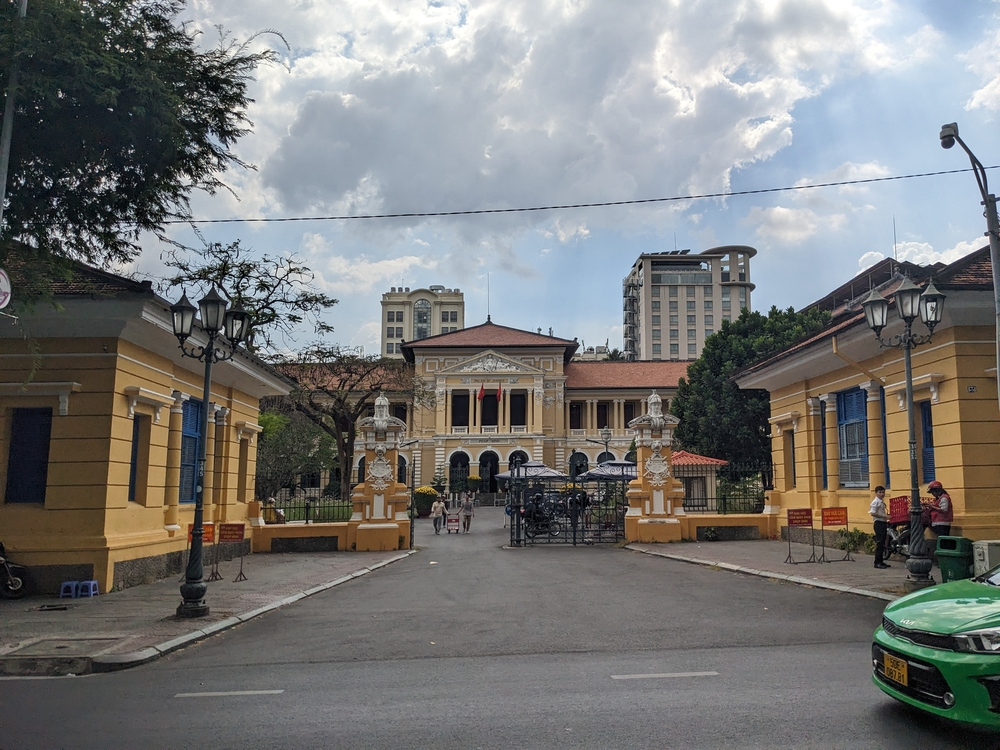
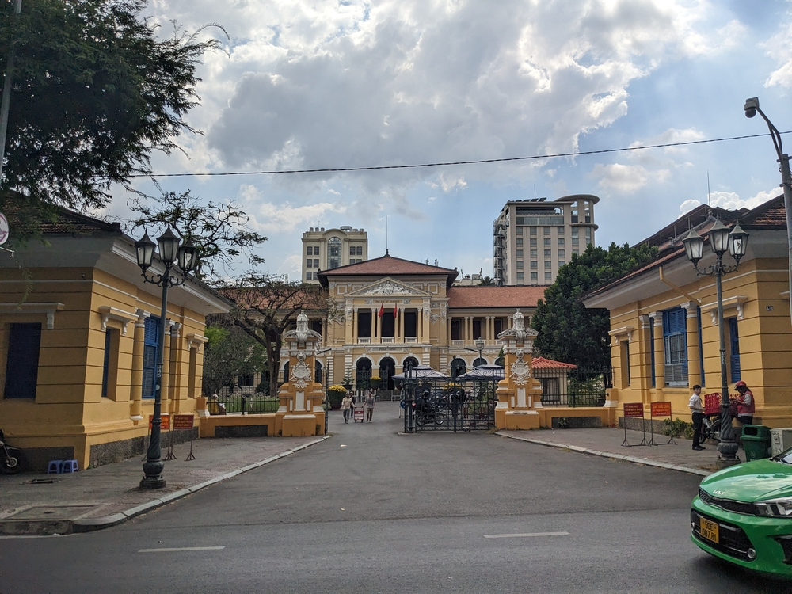

A Brief Recap of My Time in Hanoi and Ho Chi Minh City
I spent a month in Vietnam in total which was bookend by about a 10 days in Hanoi and 6 in Ho Chi Minh City (Saigon). I'll write a separate post detailing the motorcycle road trip that took place in the middle of my time since there is a lot to cover. In general I enjoyed Vietnam. It was a bit of a shock to see so many tourists after my two months in Taiwan and especially in Hanoi I found a lot of the city was built around this tourism business. This isn't a bad thing but I did feel like some of the authenticity was lost because of this. 

Hanoi (North Vietnam)
Hanoi was my introduction to Vietnam. I took in the sites and started to sample the food, many Banh Mi were had. Part way through my stay in the city was the start of Tet, a celebration that lasts a couple weeks starting just before Lunar New Year. If you Google Tet you'll see that it's officially a day or two but if you've been in Southast Asia you know that celebrations often start days before and extend for days or weeks afterward. This meant that it was a little tricky finding restaurants and businesses that were actually open. Despite that I still got to see lots of the city.The Old Quarter is the typical tourist trap with bars, restaurants, souvenir markets and as much knock-off Patagonia merch as you can fit in your checked bag. This was a cool place to enjoy a cold drink and find food during the main days of Tet, as tourists are no usually observing the same holidays.


Ho Chi Minh City (Saigon)
Saigon was more my type of city, and although very large and car-centered it was still somewhat walkable. It felt more modern and while it was still touristy did not feel as though that was the only industry. The city was more modern than Hanoi and with Tet being over I found it to be much more alive and welcoming.


- LaCaphe
- EveryHalf
- Hoff
- 96B
- Hummingbird - probably my favourite of the bunch
One of the main tourist attractions around Ho Chi Minh are the Cu Chi Tunnels. These tunnels were used by the Viet Cong forces during the Vietnam war. There are medical areas, kitchens, war rooms, and bunks all just underground. You walk through the forest to get there and along the way it just looks like hilly terrain but once you start looking you realize that the hills are actually created by craters from bombs that were dropped. Even more interesting is that in some of these craters you can see where tunnels had been from the wood bracing or other materials. During the tour you are strictly forbidden from going off the trail as unexploded bombs and caved in tunnels are prevelent. Part of the tour involves actually going inside the tunnels, and some are as long as fifty meters! Of course the size of the tunnels is not very comfortable for westerners, with the maximum height only being a little above a meter and some sections nearly requiring you to crawl on your stomach.